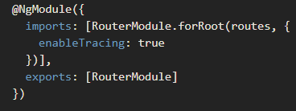
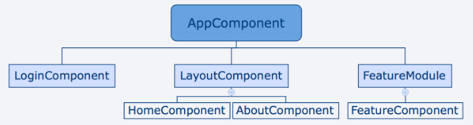

明明設好了路由卻不知道發生了什麼問題，要追還真不知道要從哪裡追起。
不過 Angular 依舊貼心地提供了一個功能給我們，只要在 RouterModule 的 forRoot 函式裡多傳入一個 enableTracing: true 的物件
另外加上 [routerLinkActive] ， Angular 的路由機制會自動幫我們加上該類別。
產生一個含有路由的 NgModule ng generate module XXXX --routing
把延遲載入調整為預先載入
說起來其實也很簡單，只要我們找到我們最上層的路由模組 （沒意外的話，通常都是 AppRoutingModule） ，然後先從 @angular/router 引入一個名為 PreloadAllModules 的模組